DEPARTMENT OF MECHANICAL ENGINEERING
VOLLEY
A Commanded Electromagnetic CubeSat
Deployment Mechanism
Adityavardhan Mishra · 23070125054
Pratham Chawla · 23070125029
Symbiosis Institute of Technology, Pune
B.Tech · Mechanical Engineering
Guide: Vikas Gulia
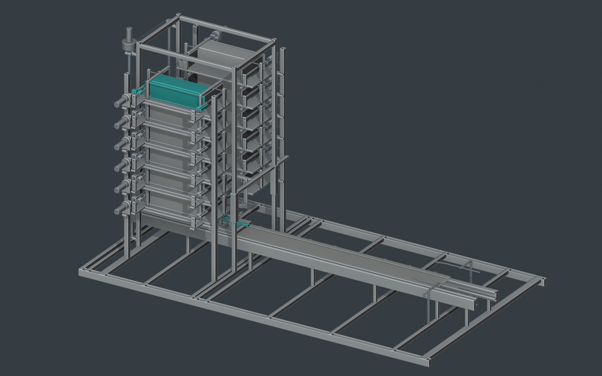
Design and Computational Evaluation · October 2026
01 / 31
OUTLINE
From the delivery problem to the engineering result
Problem and
objectives
Problem, prior work and
design objectives
Mechanism and
evaluation
Mechanism, models,
numerical checks and
mission results
Research programme
Development history,
research ecosystem and
next hardware stage
One connected argument: mission, machine, evidence and development.
Department presentation format; blackbook chapters 1–11
02 / 31
INTRODUCTION
The host moves the orbit. VOLLEY commands departure.
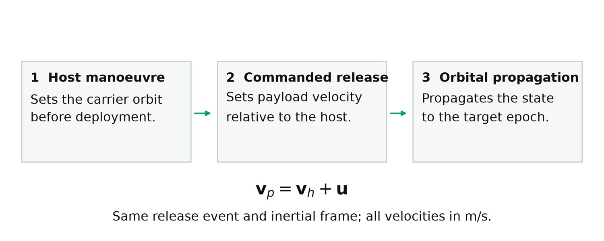
Explanatory schematic. Release velocity and host velocity refer to the same event and frame.
Initial integration audience:
orbital-transfer and rideshare
host operators
POEM inspires reuse of an
orbital platform; Electron Kick
Stage inspires host manoeuvres
Individual departure velocity is an
additional mission variable
Add a controllable relative release state to a manoeuvring host.
Blackbook §§1.1,2.2,8.1; ISRO POEM; Rocket Lab Kick Stage
03 / 31
LITERATURE REVIEW AND RESEARCH GAP
The contribution is the integrated retained-carrier cycle
Prior work / study
Engineering focus
Zhao et al. (2022)
Stacked electromagnetic deployment
Zhao et al. (2025)
Storage and transport interfaces
Feng et al. (2025)
Reachable-domain study
VOLLEY
Integrated custody, finite motor/source, arrest and mission burden
Connect custody, finite motor force, source response, arrest and mission burden.
Blackbook chapter 3; doi:10.3390/rs14174205; doi:10.3390/aerospace12060466; doi:10.1155/ijae/3000765
04 / 31
OBJECTIVES AND CONFIGURATION
A complete reference for twelve retained payloads
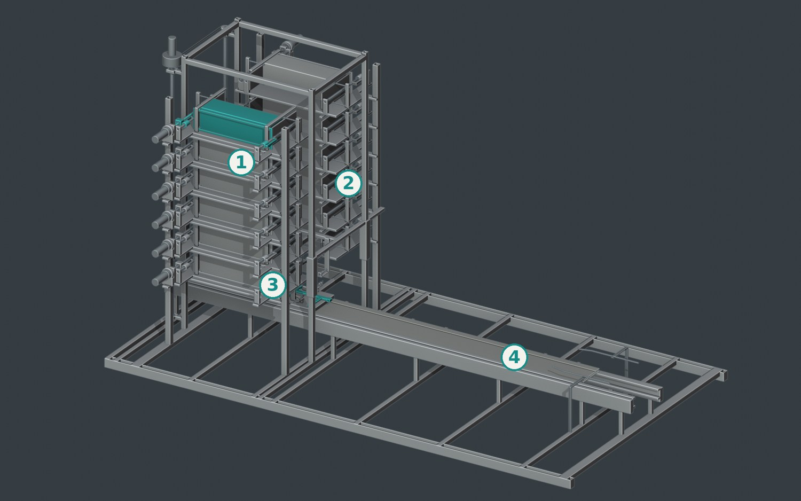
CAD-derived assembly view. The represented payload is a 3U envelope surrogate.
Two fixed six-cell banks; one
indexed captive pallet
Guided lead-screw feed; positive
carrier capture
Reusable moving-magnet carrier;
fixed three-phase stator
12 × 4 kg
3U envelope surrogates
1–3 m/s
Analysed command cases
2250 mm
Guide-rail allocation
Define a repeatable path from storage to free departure.
Blackbook §§2.1–2.3,5.1
05 / 31
FEEDER MECHANISM
Feed one cell into a supported receiver
CAD-derived operating sequence; display timing edited. Static fallback shown.
Index the receiver to the selected
cell
Open the permitted restraint;
advance the guided pusher
Establish receiving containment;
retract the pusher and close the
cell
The selected guided lead screw transfers the payload into the lift-held pallet.
Blackbook §§5.1–5.4,7.4; Labs feeder selection
06 / 31
PALLET DOCKING AND RELEASE
Transfer custody before withdrawing support
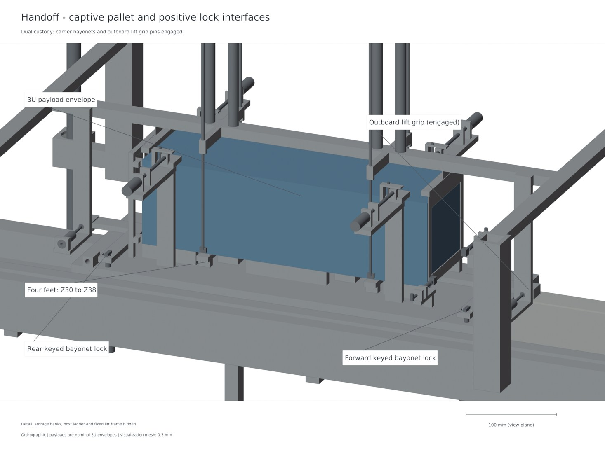
CAD-derived docking state. Modelled capture sequence; not a photographed hardware test.
Carrier capture caps and
independent pins engage
Keyed pallet shafts insert 12 mm
and rotate 90°
Only then do lift grips retract and
the lift clear the launch path
One captive pallet stays with the reusable carrier through launch and recovery.
Blackbook §§5.2–5.4,9.2
07 / 31
ELECTROMAGNETIC OPERATING PRINCIPLE
Finite geometry sets the motor force
Fₓ = ∫Cu (J × B)ₓ dV
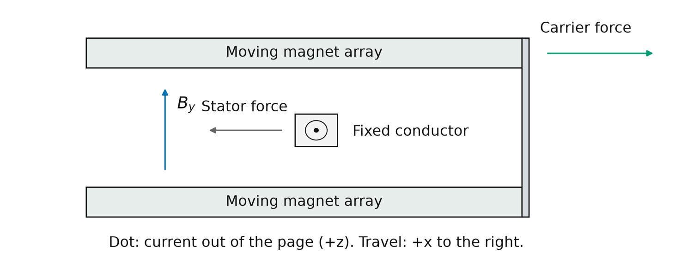
Local force/reaction schematic. The numerical model integrates the represented finite geometry.
Integrate current density over the
represented copper
Finite magnet blocks, active
conductors and returns enter the
calculation
Launch and arrest use their
corresponding
position-dependent maps
≈1.328 N/A
Active-conductor coefficient
≈1.399 N/A
Including represented returns
Opposed permanent-magnet arrays exchange force with a fixed three-phase winding.
Blackbook §§4.2,6.1–6.2
08 / 31
RESEARCH METHODOLOGY
Solve source, current and motion together
Vq = R Iq + L dIq/dt + Ke(x) v
CAD-derived operating sequence; display timing edited. Static fallback shown.
Phase voltage, current and
back-emf
Finite capacitance and ESR
constrain available terminal
power
Rear contact reaches zero; the
retained carrier then arrests
The release event changes the mechanical connectivity of the model.
Blackbook §§4.3–4.4,6.3–6.4
09 / 31
COUPLED OPERATING RESULTS
The principal 3 m/s case completes release and arrest
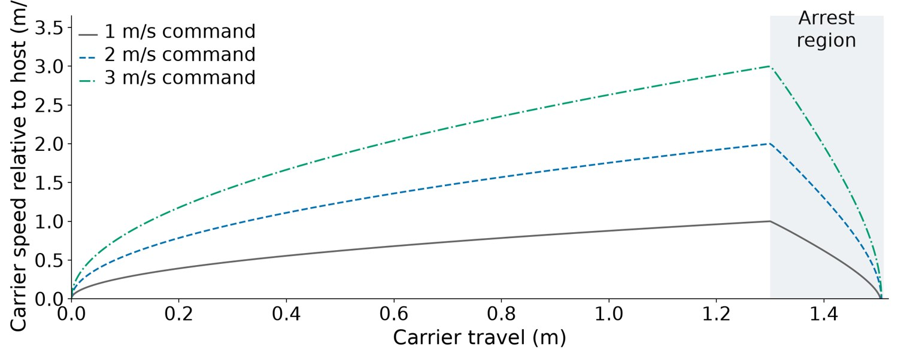
Computed histories. Principal case: 3 m/s command, nominal source, 20 µH; source and case-specific checks apply.
3 m/s command → 2.999864 m/s release · carrier stop position 1.507289 m
Blackbook §§6.3–6.4; coupled shot and timestep audit
10 / 31
CAD AND INTEGRATION VERIFICATION
Check solids, states and the represented motion path
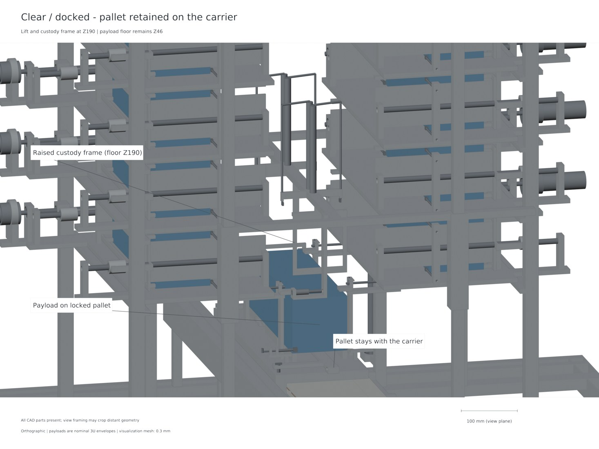
CAD-derived launch-ready state. Native solid and exchange-geometry records support the displayed
arrangement.
Eight native and STEP states
retain part identities and pallet
counts
154 accepted sampled-motion
and refinement checks
Named solid-volume mass ledger
separates CAD material and
allowances
8
Native / STEP states
154
Motion / refinement checks
149.557 kg
Represented dry CAD mass
Geometry is checked beyond a single assembly rendering.
Blackbook §§7.1,7.3–7.5; native/STEP readback
11 / 31
STRUCTURAL ANALYSIS
Independent static calculations reproduce paired closure
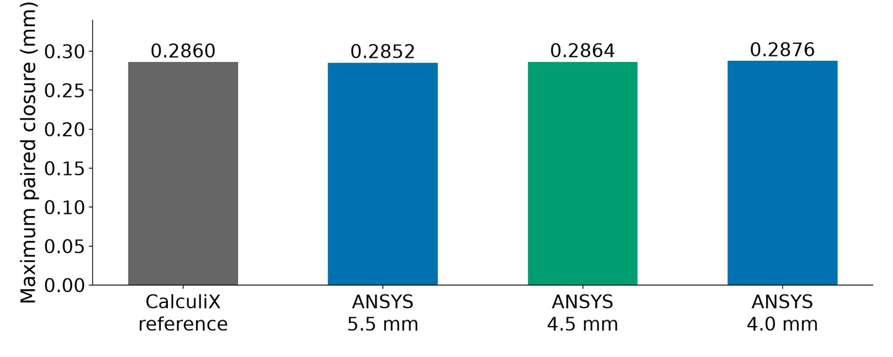
Computed bare-chassis comparison. ANSYS mesh refinement sensitivity is distinct from experimental accuracy.
Paired closure: 0.285983 mm (CalculiX) · 0.286392 mm (primary ANSYS sample)
Blackbook §7.2; corrected matched ANSYS static cross-check
12 / 31
THERMAL ANALYSIS AND CONTROLS
Thermal budgets and interlocks complete the operating
boundary
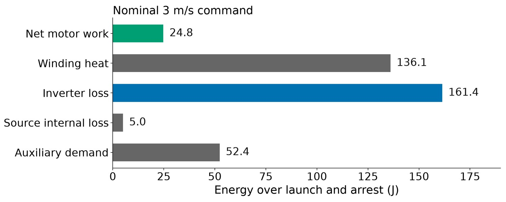
Computed principal-case energy account. Numerical residuals check conservation; they are not efficiency or
reliability measurements.
Copper heating uses the current
history and represented
conductor field
Repeated-shot estimates
distinguish bulk rise, local rise
and cooling assumptions
24 nominal commands; 166
passing interlock-model tests
Electrical losses, contact assumptions and sequencing stay explicit.
Blackbook §§5.4,7.6–7.7; source energy and interlock records
13 / 31
MISSION COMPARISON
Compare equal delivery targets and count retained resources
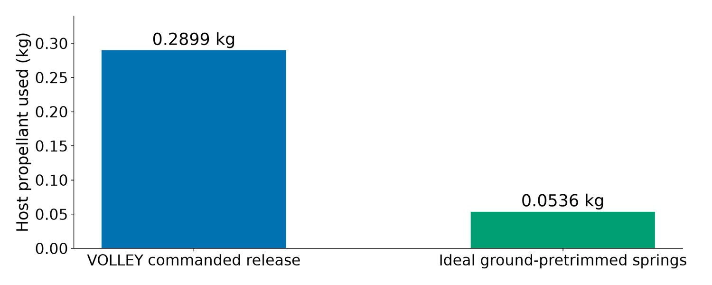
Selected feasible tested policies in the alternating target family with a 5 N host ceiling; device masses and burn guards retain their declared differences.
Host propellant: 0.2899 kg (VOLLEY) · 0.0536 kg (ideal ground-pretrim spring)
Blackbook §§8.2–8.5; mission comparison and native Orekit replay
14 / 31
CONCLUSIONS
A complete computational reference connects the machine to
the mission
Operating cycle
Storage, feed, capture,
departure, arrest and return
are defined
Coupled model
Finite force, source
response and retained mass
are evaluated together
Engineering checks
Geometry, structure,
thermal budgets and
mission resources share an
evidence chain
The study delivers a defined operating cycle and configuration-specific engineering results.
Blackbook chapters 9–11
15 / 31
TIMELINE AND WORK PROGRESS
Development follows linked engineering questions
01
Concept and architecture
Concept and host architecture
→ feeder, carrier and finite
motor models
02
Integrated evaluation
Integrated computational
reference → independent
numerical comparisons
03
Prototype requirements
Reusable tools and Labs
investigations →
physical-development
requirements
Five-plus years of VOLLEY development produced a connected engineering record.
Blackbook development appendix; documented project history
16 / 31
RESEARCH ECOSYSTEM
An engineering ecosystem grew around the deployment
problem
VOLLEY Labs
VOLLEY Labs: feeder
alternatives, force
benchmarking and new
speed configurations
Reusable tools
Reusable tools: motor
design, separation/orbits,
CAD automation and source
traceability
Future interfaces
GatewayCX: proposed
cislunar network
relationship; technical paper
draft for future peer review
Each related project addresses a specific part of the development chain.
VOLLEY Labs research catalogue; engineering tool repositories; GatewayCX architecture
17 / 31
FUTURE WORK
Gen6 turns the reference into an instrumented hardware
programme
01
Gen6 prototype
Gen6: instrumented feed/lock
and motor/source articles, then
a mixed 1U/3U prototype
02
Higher-speed study
Higher-speed programme:
separate ~10 m/s
computational design; 1 km/s
stretch research objective
03
Long-term architecture
Future host: a POEM-inspired
free-flying carrier, replenishable
constellations and Artemis-era
lunar science/communications
Long-term cislunar delivery: 3.5 km/s departure research, with targeting and capture designed separately.
Blackbook §11.2; Labs high-speed and lunar architecture studies; NASA lunar infrastructure programme
18 / 31
DEPARTMENT OF MECHANICAL ENGINEERING
Commanded deployment, evaluated as a
complete system
A defined machine. Coupled engineering. A measured route to hardware.
Questions
CubeSat interface sources; Zhao 2022/2025; Feng 2025; Halbach and finite-motor literature
Native CAD, finite-element, circuit and orbital source records accompany the study
VOLLEY technical record: github.com/aaaaaaaaaaaavm/VOLLEY
Full bibliography in blackbook; technical appendix and source-linked study records
19 / 31
APPENDIX A1 · REFERENCE CONFIGURATION
Reference quantities and mass boundaries
CAD-derived assembly; mass values are modelled/allocated, not scale measurements.
Payloads: 12 × 4 kg; each 340.5
× 100 × 100 mm
Dry CAD 149.557 kg;
power/control allowance 7 kg;
loaded device 204.557 kg
Retained moving carrier plus
pallet: 13.127806 kg
Keep represented CAD material, system allowances and payloads separate.
Blackbook: Reference configuration
20 / 31
APPENDIX A2 · FEEDER SELECTION
Why a guided lead screw?
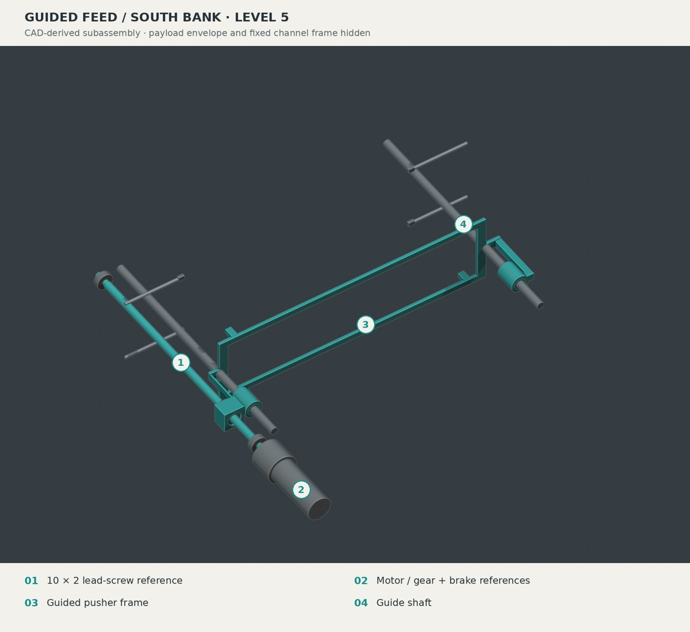
CAD-derived feeder detail. Detailed comparison remains in Labs.
Lead screw selected;
rack-and-pawl retained as
runner-up
Seven candidates preserve
pantograph, telescope, belt,
drum and spring/gate concepts
Weighted scores are declared
judgments; measured reliability
remains a hardware question
Selection balances restraint, controlled travel, packaging and failure behaviour.
Blackbook: Feeder selection
21 / 31
APPENDIX A3 · PALLET CUSTODY
Capture before lift release
CAD-derived state; interlock logic and geometric checks have separate scopes.
12 mm lock insertion; keyed
heads rotate 90°
Lift grips retract 26 mm only after
permitted carrier capture
Same pallet remains through
launch, arrest and return
Carrier capture and independent locking precede lift withdrawal.
Blackbook: Pallet custody
22 / 31
APPENDIX A4 · ELECTROMAGNETIC METHODS
Finite-field and current-path comparisons
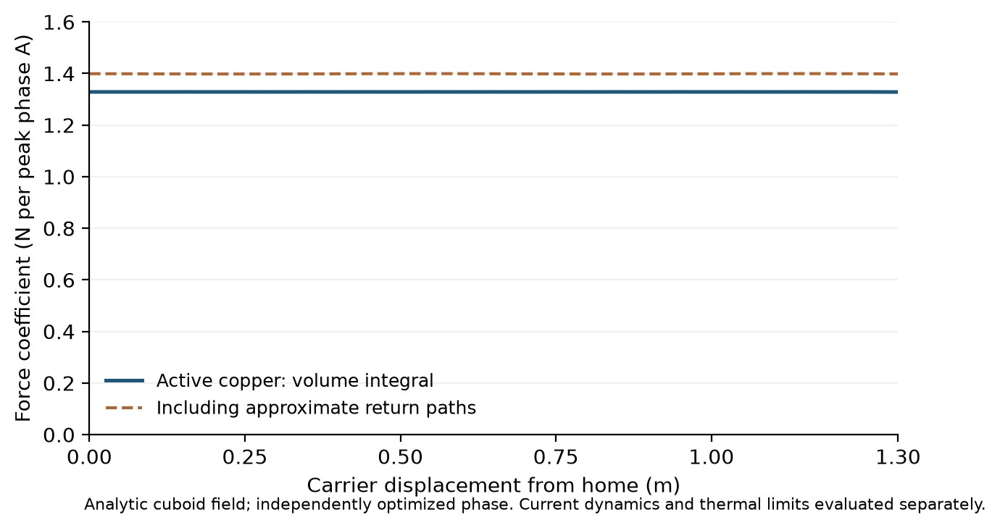
Numerical comparison at stated stations; not a physical accuracy specification.
Finite source-face comparison
checks the active field/force
formulation
Conduction FEM at 0.65 m:
1.396651 N per peak phase
ampere
Uniform bars plus approximate
returns: 1.399055 N/A; local
difference −0.1718%
Fₓ = ∫ (J × B)ₓ dV
Alternative calculations test different aspects of the represented model.
Blackbook: Electromagnetic methods
23 / 31
APPENDIX A5 · ELECTRICAL REFERENCE
Source and switching allocations
Nominal source
32S2P, 64 cells; nominal
6.25 F and 0.176 Ω
Adverse source
Adverse 3.9375 F and 0.352
Ω; 2.9 V/cell regeneration
terminal cap
Power stage
Three half bridges, 10
devices per switch position,
60 MOSFETs; 40 kHz
reference PWM
Ratings enter the model with finite impedance and declared switching assumptions.
Blackbook: Electrical reference
24 / 31
APPENDIX A6 · ENERGY VERIFICATION
Principal nominal energy account
Numerical ledger for one specified case; regenerative braking and event boundaries matter.
Capacitor draw: 379.682 J in the
20 µs principal nominal replay
Copper 136.066 J; inverter
161.429 J; bank 5.039 J;
auxiliaries 52.389 J
Full-cycle mechanical term
24.768 J; do not equate it with
peak moving-body kinetic energy
Signed energy terms include source and auxiliary losses.
Blackbook: Energy verification
25 / 31
APPENDIX A7 · STRUCTURAL INTERPRETATION
Gap closure and individual-face budgets
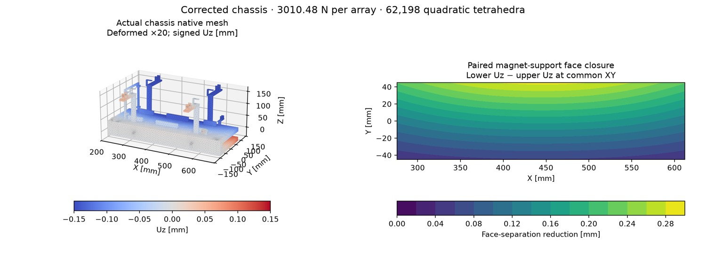
Native bare-chassis mesh and paired closure. Deformation ×20; assembled allowances are separate.
CalculiX nominal paired closure
0.285983 mm; 1.3-load closure
0.371778 mm
Conditional centring split, plus
alignment/flatness/assembly/thermal
allowances
Individual-face reference design
budget 0.264111 mm
A paired closure is not an individual assembled clearance.
Blackbook: Structural interpretation
26 / 31
APPENDIX A8 · THERMAL AND CONTROL SCOPE
Thermal and fault interpretation
Temperature and time
3.295053 K is a temperature
rise; 450 s is the inter-shot
interval
Thermal measures
Bulk, volume-99 and
sharp-corner mesh
observations have different
meanings
Encoded logic
166 interlock tests verify
encoded logic, not a
measured reliability
probability
Keep quantities and test meanings distinct.
Blackbook: Thermal and control scope
27 / 31
APPENDIX A9 · MISSION MECHANICS
Host reaction and the common terminal epoch
Explanatory mission schematic; complete comparison includes host manoeuvres and device mass.
Principal 3 m/s nominal relative
release gives about 2.927 m/s
payload inertial increment
Count carrier acceleration,
subsequent carrier arrest and
changing retained mass
Compare all payload
position/velocity targets at a
common epoch
A commanded relative release differs from the payload inertial increment.
Blackbook: Mission mechanics
28 / 31
APPENDIX A10 · RESEARCH CONFIGURATIONS
Higher-speed work already in Labs
New configuration
Longer powered travel,
revised finite winding and
source accounting
Model checks
Retained-carrier
nominal/adverse cases pass
their declared circuit/motion
checks
Alternative design
Attached-shoe alternative
and its adverse speed miss
remain separately recorded
The approximately 10 m/s study is a separately specified computational design.
Blackbook: Research configurations
29 / 31
APPENDIX A11 · CISLUNAR ARCHITECTURE
Lunar departure and capture are separate operations
Parking-orbit screen
Ideal 500 km parking-orbit
screen: approximately 3.058
km/s departure increment
Departure energy
A prograde 3.5 km/s
increment from that
reference is Earth-escape
energy
Capture design
Lunar targeting, host recoil
and lunar capture require
their own complete mission
design
Departure speed alone does not establish lunar-orbit delivery.
Blackbook: Cislunar architecture
30 / 31
APPENDIX A12 · REFERENCES AND RESEARCH ECOSYSTEM
Selected bibliography and research record
Y. Zhao et al. (2022). “Design and analysis of a new deployer for the in-orbit release of multiple stacked CubeSats.” Remote Sensing
14(17), 4205.
Y. Zhao et al. (2025). “Simulation analysis and experimental verification of the transport characteristics of a high-volume CubeSat
storage device.” Aerospace 12(6), 466.
H. Feng, Y. Yang and Y. Wu (2025). “Design and reachable domain analysis of on-orbit electromagnetic launcher for CubeSats.”
International Journal of Aerospace Engineering, 3000765.
Architectural and mission context
Planned IEEE-formatted paper · venue unselected · manuscript unsubmitted
The paper documents the checked study; tools retain their own contribution boundaries.
Blackbook: References and research ecosystem
31 / 31